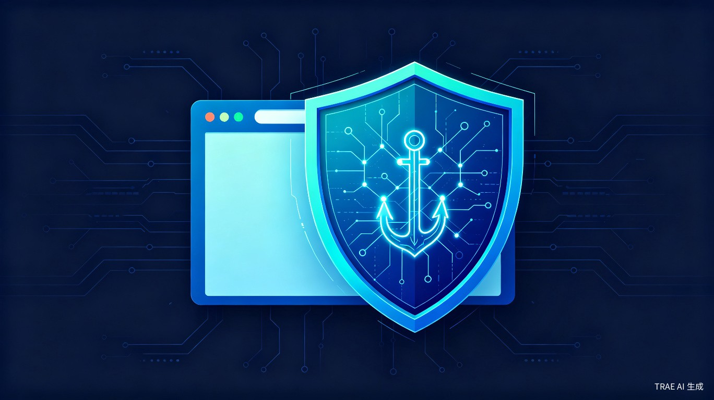

基于规则引擎与CNN卷积神经网络的浏览器扩展 + Python后端服务，为用户构建实时智能安全屏障
核心命题：网络钓鱼攻击日益猖獗，传统黑名单防护方式滞后，普通用户难以识别精心伪装的钓鱼网站，导致个人信息泄露和财产损失。
基于日常网络安全防护需求，我们观察到钓鱼网站的攻击手法正在快速进化：从简单的仿冒页面到高度逼真的克隆站点，传统依赖静态黑名单的防护方案已难以应对。我们希望通过引入 AI 深度学习技术，构建一套能够动态识别、实时拦截的智能防护系统，让每一位普通网民都能获得企业级的安全保护。
本系统采用 浏览器扩展 + Python 后端服务 的完整架构：
flowchart LR
A[用户访问网页] --> B[浏览器扩展采集特征]
B --> C[规则引擎初筛]
B --> D[URL CNN+BiLSTM分析]
C --> E[融合决策引擎]
D --> E
E -->|高风险| F[实时拦截并警告]
E -->|低风险| G[放行访问]
E -->|可疑| H[表单分析辅助]
H --> E
日常浏览网页、点击邮件/短信中的链接时，缺乏专业判断能力，容易误入钓鱼陷阱。
需要为员工提供统一的安全浏览保障，降低因钓鱼攻击导致的企业数据泄露风险。
| 痛点 | 具体表现 | 现有方案不足 |
|---|---|---|
| 变化速度快 | 钓鱼网站域名、页面结构频繁更换，生命周期短至数小时 | 黑名单更新滞后，无法覆盖新出现的威胁 |
| 伪装性强 | 高度仿冒知名网站，视觉设计几乎以假乱真 | 传统杀毒软件依赖特征码，对视觉仿冒识别能力弱 |
| 用户认知不足 | 普通用户难以辨别 URL 细微差异和证书真伪 | 缺乏实时、轻量、无感知的智能辅助判断工具 |
钓鱼攻击是造成个人信息泄露和财产损失的主要网络威胁之一。本系统致力于 提升全民网络安全防护能力，通过 AI 技术将专业级的安全检测能力普惠到每一位普通用户，从源头减少因钓鱼攻击造成的社会经济损失。
相比传统人工审核模式，AI 实时识别具备显著的效率优势：
愿景：让 AI 成为每一位网民的「数字安全卫士」，在点击链接的瞬间完成智能判断，守护数字世界的每一次访问。
基于域名信誉、URL 特征、证书信息等10条规则进行高效初筛，快速放行正常网站，减轻深度学习模型负载。
对URL字符序列进行深度特征提取，通过卷积层和双向LSTM捕捉URL中的可疑模式，识别未知钓鱼网站。
规则引擎(40%) + URL CNN(40%) + 表单分析(20%) 协同决策，兼顾检测速度与准确率，降低误报率和漏报率。
轻量级插件形态，安装即用，不占用系统资源，在用户访问前完成实时拦截。
CNN模型未加载或推理失败时，自动将权重转移给规则引擎，确保服务始终可用，不影响用户正常浏览。
已预留视觉CNN模块接口，支持后续集成网页截图分析能力，实现多维度综合检测。